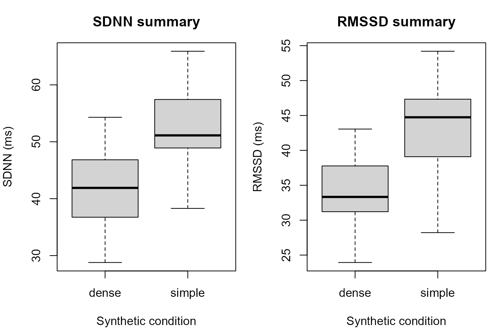
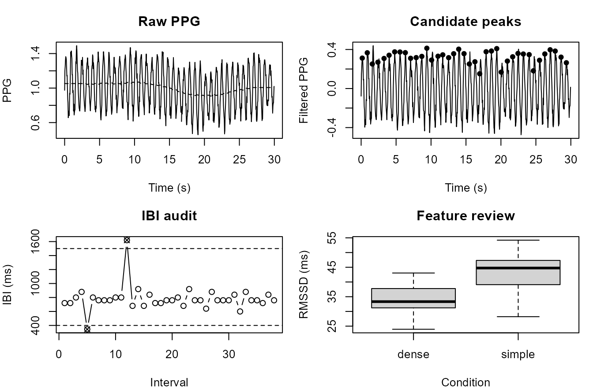

PPG and HRV visual diagnostics
Source:vignettes/articles/ppg-hrv-visual-diagnostics.Rmd
ppg-hrv-visual-diagnostics.RmdPurpose
This article demonstrates a plot-rich visual diagnostics workflow for
photoplethysmography (PPG), inter-beat intervals (IBI), heart-rate
variability (HRV) feature preparation, and respiration-proxy displays in
gpbiometrics projects.
The workflow is diagnostic and signal-processing oriented. The figures show raw and filtered PPG traces, baseline-wander checks, candidate peak markers, IBI sequences, implausible-interval audits, Poincare-style interval displays, segment-level HRV summaries, respiration-proxy traces, and compact dashboard-style reporting. They should not be interpreted as direct evidence of health status, clinical state, diagnosis, stress, emotion, attention, workload, autonomic state, or psychological response.
Synthetic PPG stream
The example uses synthetic data so that the article is reproducible and does not depend on private recordings.
participants <- sprintf("P%02d", 1:8)
trials <- seq_len(10)
samples_per_trial <- 750
sampling_rate_hz <- 25
time_s <- seq(0, (samples_per_trial - 1) / sampling_rate_hz, length.out = samples_per_trial)
trial_grid <- expand.grid(
participant_id = participants,
trial_id = trials,
KEEP.OUT.ATTRS = FALSE,
stringsAsFactors = FALSE
)
make_ppg_trial <- function(participant_id, trial_id) {
condition <- ifelse(trial_id %% 2 == 0, "dense", "simple")
participant_shift <- match(participant_id, participants) / 120
heart_hz <- ifelse(condition == "dense", 1.28, 1.18) + participant_shift + rnorm(1, 0, 0.015)
respiration_hz <- 0.23 + rnorm(1, 0, 0.01)
baseline <- 0.08 * sin(2 * pi * time_s / 28) + 0.03 * cos(2 * pi * time_s / 13)
respiratory_modulation <- 1 + 0.18 * sin(2 * pi * respiration_hz * time_s)
pulse <- respiratory_modulation * sin(2 * pi * heart_hz * time_s)
harmonic <- 0.25 * sin(2 * pi * heart_hz * 2 * time_s + 0.6)
noise <- rnorm(length(time_s), 0, ifelse(condition == "dense", 0.045, 0.035))
ppg_raw <- 1.0 + baseline + 0.32 * pulse + 0.08 * harmonic + noise
missing <- runif(length(time_s)) < ifelse(condition == "dense", 0.006, 0.003)
ppg_raw[missing] <- NA_real_
data.frame(
participant_id = participant_id,
trial_id = trial_id,
condition = condition,
time_s = time_s,
ppg_raw = ppg_raw,
stringsAsFactors = FALSE
)
}
ppg <- do.call(
rbind,
Map(make_ppg_trial, trial_grid$participant_id, trial_grid$trial_id)
)
head(ppg)
#> participant_id trial_id condition time_s ppg_raw
#> P01.1 P01 1 simple 0.00 1.038846
#> P01.2 P01 1 simple 0.04 1.134224
#> P01.3 P01 1 simple 0.08 1.195769
#> P01.4 P01 1 simple 0.12 1.261410
#> P01.5 P01 1 simple 0.16 1.351992
#> P01.6 P01 1 simple 0.20 1.352927Raw and filtered PPG trace
A raw/filtered trace helps document whether preprocessing changes the signal in a plausible and transparent way.
fill_missing <- function(x) {
if (!anyNA(x)) return(x)
idx <- seq_along(x)
observed <- !is.na(x)
approx(idx[observed], x[observed], xout = idx, rule = 2)$y
}
smooth_series <- function(x, width) {
y <- stats::filter(x, rep(1 / width, width), sides = 2)
y <- as.numeric(y)
idx <- seq_along(y)
observed <- !is.na(y)
y[!observed] <- approx(idx[observed], y[observed], xout = idx[!observed], rule = 2)$y
y
}
one_trial <- ppg[ppg$participant_id == "P01" & ppg$trial_id == 2, ]
one_trial$ppg_filled <- fill_missing(one_trial$ppg_raw)
one_trial$baseline_est <- smooth_series(one_trial$ppg_filled, width = 151)
one_trial$ppg_filtered <- one_trial$ppg_filled - one_trial$baseline_est
plot(
one_trial$time_s,
one_trial$ppg_raw,
type = "l",
xlab = "Time (s)",
ylab = "PPG",
main = "Raw and filtered PPG"
)
lines(one_trial$time_s, one_trial$ppg_filtered + mean(one_trial$ppg_raw, na.rm = TRUE), lty = 2)
legend("topright", legend = c("raw", "filtered, shifted"), lty = c(1, 2), bty = "n")Synthetic raw and filtered PPG trace for one participant-trial segment.
Baseline-wander check
Baseline-wander displays support transparent reporting of the preprocessing state used for peak detection or interval extraction.
plot(
one_trial$time_s,
one_trial$ppg_filled,
type = "l",
xlab = "Time (s)",
ylab = "PPG",
main = "Baseline-wander check"
)
lines(one_trial$time_s, one_trial$baseline_est, lty = 2)
legend("topright", legend = c("filled raw", "baseline estimate"), lty = c(1, 2), bty = "n")Synthetic PPG baseline-wander estimate.
Candidate PPG peak markers
Candidate peak markers provide a visual audit trail for beat detection. They are algorithmic candidates, not clinical annotations.
detect_simple_peaks <- function(y, time_s, threshold = NULL, refractory_s = 0.45) {
n <- length(y)
candidate <- which(y[2:(n - 1)] > y[1:(n - 2)] & y[2:(n - 1)] > y[3:n]) + 1
if (is.null(threshold)) {
threshold <- median(y, na.rm = TRUE) + 0.35 * stats::sd(y, na.rm = TRUE)
}
candidate <- candidate[y[candidate] >= threshold]
if (length(candidate) == 0) return(integer())
keep <- candidate[1]
for (i in candidate[-1]) {
if ((time_s[i] - time_s[tail(keep, 1)]) >= refractory_s) {
keep <- c(keep, i)
}
}
keep
}
peak_idx <- detect_simple_peaks(one_trial$ppg_filtered, one_trial$time_s)
peaks <- data.frame(
time_s = one_trial$time_s[peak_idx],
ppg_filtered = one_trial$ppg_filtered[peak_idx]
)
plot(
one_trial$time_s,
one_trial$ppg_filtered,
type = "l",
xlab = "Time (s)",
ylab = "Filtered PPG",
main = "Candidate PPG peaks"
)
points(peaks$time_s, peaks$ppg_filtered, pch = 16)Synthetic candidate PPG peak markers.
IBI interval sequence
The IBI sequence shows the interval series derived from candidate peak times. Implausible intervals should be flagged before HRV feature extraction.
ibi_ms <- diff(peaks$time_s) * 1000
ibi_data <- data.frame(
interval_id = seq_along(ibi_ms),
ibi_ms = ibi_ms
)
if (nrow(ibi_data) >= 12) {
ibi_data$ibi_ms[5] <- 345
ibi_data$ibi_ms[12] <- 1620
}
plot(
ibi_data$interval_id,
ibi_data$ibi_ms,
type = "b",
xlab = "Interval index",
ylab = "IBI (ms)",
main = "IBI sequence"
)
abline(h = c(400, 1500), lty = 2)Synthetic IBI sequence from candidate PPG peaks.
Implausible interval audit
This audit separates intervals retained for feature extraction from intervals requiring review or correction.
ibi_data$flag_implausible <- ibi_data$ibi_ms < 400 | ibi_data$ibi_ms > 1500
plot(
ibi_data$interval_id,
ibi_data$ibi_ms,
type = "n",
xlab = "Interval index",
ylab = "IBI (ms)",
main = "Implausible interval audit"
)
points(ibi_data$interval_id[!ibi_data$flag_implausible], ibi_data$ibi_ms[!ibi_data$flag_implausible], pch = 16)
points(ibi_data$interval_id[ibi_data$flag_implausible], ibi_data$ibi_ms[ibi_data$flag_implausible], pch = 4)
abline(h = c(400, 1500), lty = 2)
legend("topright", legend = c("retained", "flagged"), pch = c(16, 4), bty = "n")Synthetic implausible IBI interval audit.
Poincare-style interval display
A Poincare-style interval plot is a compact diagnostic for interval-to-interval structure. It is a descriptive interval display, not a clinical interpretation.
ibi_clean <- ibi_data$ibi_ms[!ibi_data$flag_implausible]
poincare <- data.frame(
ibi_n = ibi_clean[-length(ibi_clean)],
ibi_next = ibi_clean[-1]
)
plot(
poincare$ibi_n,
poincare$ibi_next,
pch = 16,
xlab = "IBI[n] (ms)",
ylab = "IBI[n+1] (ms)",
main = "Poincare-style interval display"
)
abline(0, 1, lty = 2)Synthetic Poincare-style IBI display.
Segment-level HRV feature summaries
Segment-level features can be reviewed for coverage and distribution before modelling.
make_hrv_features <- function(participant_id, trial_id) {
condition <- ifelse(trial_id %% 2 == 0, "dense", "simple")
mean_ibi <- ifelse(condition == "dense", 780, 835) + rnorm(1, 0, 25)
sdnn <- ifelse(condition == "dense", 42, 52) + rnorm(1, 0, 6)
rmssd <- ifelse(condition == "dense", 34, 43) + rnorm(1, 0, 5)
pnn50 <- pmax(0, pmin(100, ifelse(condition == "dense", 18, 27) + rnorm(1, 0, 5)))
data.frame(
participant_id = participant_id,
trial_id = trial_id,
condition = condition,
mean_ibi_ms = mean_ibi,
sdnn_ms = sdnn,
rmssd_ms = rmssd,
pnn50_percent = pnn50,
stringsAsFactors = FALSE
)
}
hrv_features <- do.call(
rbind,
Map(make_hrv_features, trial_grid$participant_id, trial_grid$trial_id)
)
op <- par(mfrow = c(1, 2), mar = c(4, 4, 3, 1))
boxplot(sdnn_ms ~ condition, data = hrv_features, xlab = "Synthetic condition", ylab = "SDNN (ms)", main = "SDNN summary")
boxplot(rmssd_ms ~ condition, data = hrv_features, xlab = "Synthetic condition", ylab = "RMSSD (ms)", main = "RMSSD summary")
Synthetic segment-level HRV feature summaries.
par(op)Respiration-proxy trace
A respiration-proxy display can be used to document an algorithmic signal estimate derived from PPG. It should be described as a proxy unless validated against a respiration reference.
abs_envelope <- abs(one_trial$ppg_filtered)
resp_proxy <- smooth_series(abs_envelope, width = 101)
resp_proxy <- resp_proxy - mean(resp_proxy, na.rm = TRUE)
plot(
one_trial$time_s,
resp_proxy,
type = "l",
xlab = "Time (s)",
ylab = "Respiration proxy",
main = "PPG-derived respiration proxy"
)
abline(h = 0, lty = 2)Synthetic respiration-proxy trace derived from PPG amplitude modulation.
Compact PPG/HRV visual diagnostics dashboard
A compact dashboard can combine preprocessing, peak detection, interval audit, and feature-review displays for technical reporting.
op <- par(mfrow = c(2, 2), mar = c(4, 4, 3, 1))
plot(one_trial$time_s, one_trial$ppg_raw, type = "l", xlab = "Time (s)", ylab = "PPG", main = "Raw PPG")
lines(one_trial$time_s, one_trial$baseline_est, lty = 2)
plot(one_trial$time_s, one_trial$ppg_filtered, type = "l", xlab = "Time (s)", ylab = "Filtered PPG", main = "Candidate peaks")
points(peaks$time_s, peaks$ppg_filtered, pch = 16)
plot(ibi_data$interval_id, ibi_data$ibi_ms, type = "b", xlab = "Interval", ylab = "IBI (ms)", main = "IBI audit")
points(ibi_data$interval_id[ibi_data$flag_implausible], ibi_data$ibi_ms[ibi_data$flag_implausible], pch = 4)
abline(h = c(400, 1500), lty = 2)
boxplot(rmssd_ms ~ condition, data = hrv_features, xlab = "Condition", ylab = "RMSSD (ms)", main = "Feature review")
Compact synthetic PPG/HRV visual diagnostics dashboard.
par(op)Relation to gpbiometrics helpers
The same reporting pattern can be paired with package-level helpers when project data use the expected column contracts.
| task | representative_helpers |
|---|---|
| PPG filtering and baseline review | filter_gazepoint_ppg_signal(); remove_gazepoint_ppg_baseline_wander() |
| PPG peak detection | detect_gazepoint_ppg_peaks(); plot_gazepoint_ppg_peak_detection() |
| IBI quality audit | audit_gazepoint_ibi_quality(); filter_gazepoint_ibi_implausible() |
| Beat correction and interval review | correct_gazepoint_beats(); summarize_gazepoint_beat_corrections() |
| HRV feature extraction | extract_gazepoint_hrv_features(); summarise_gazepoint_hrv_features() |
| Respiration-proxy estimation | estimate_gazepoint_respiration_from_ppg(); plot_gazepoint_ppg_breathing() |
| Report outputs | create_gazepoint_qc_supplement(); create_gazepoint_biometrics_report_tables() |
library(gpbiometrics)
ppg_filtered <- filter_gazepoint_ppg_signal(
biometric_data,
ppg_col = "PPG",
time_col = "TIME_MS",
output_col = "PPG_FILTERED"
)
peaks <- detect_gazepoint_ppg_peaks(
ppg_filtered,
ppg_col = "PPG_FILTERED",
time_col = "TIME_MS",
participant_col = "participant_id",
trial_col = "trial_id"
)
ibi_quality <- audit_gazepoint_ibi_quality(
biometric_data,
ibi_col = "IBI",
participant_col = "participant_id",
trial_col = "trial_id"
)
hrv_features <- extract_gazepoint_hrv_features(
biometric_data,
ibi_col = "IBI",
participant_col = "participant_id",
trial_col = "trial_id"
)
plot_gazepoint_ppg_peak_detection(ppg_filtered, peaks = peaks)
plot_gazepoint_ppg_poincare(hrv_features)Reporting recommendation
For manuscripts, technical supplements, and reviewer-facing reports, describe these figures as PPG, IBI, HRV, respiration-proxy, signal-processing, quality-control, and reproducibility diagnostics. Avoid stronger clinical, health-related, affective, workload-related, stress-related, attentional, or psychological interpretation unless supported by validation, controls, and modelling evidence.